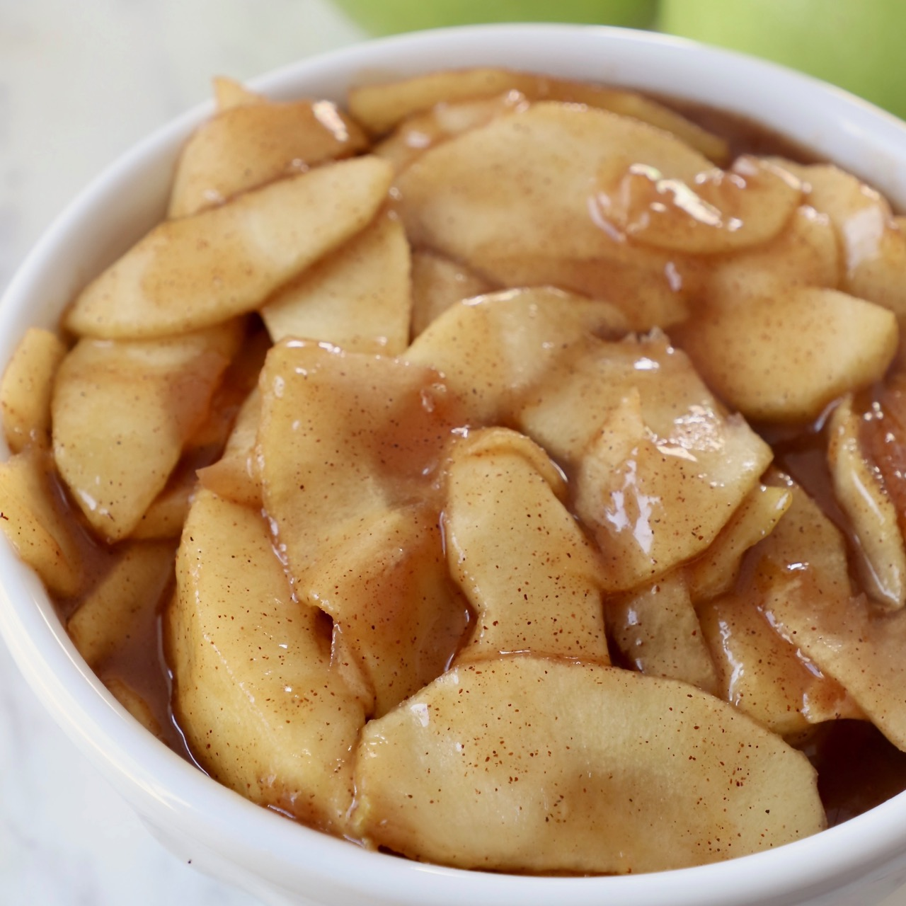

Apple Pie Filling

Description
Indulge in the comforting embrace of warm, aromatic apples enveloped in a flaky, golden crust with our Classic Apple Pie Filling recipe. This timeless favorite captures the essence of autumn in every delicious bite.
Ingredients
- Apples
- Lemon juice
- Water
- Sugar
- Cornstarch
- Salt
- Spices
Steps
- Place apples in a bowl. Toss apples with lemon juice in a large bowl and set aside.
- Pour water into a Dutch oven over medium heat. Combine sugar, cornstarch, cinnamon, salt, and nutmeg in a bowl; add to water, stir well, and bring to a boil. Boil for 2 minutes, constantly stirring.
- Add apples and return to a boil. Reduce heat, cover, and simmer until apples are tender, 6 to 8 minutes. Cool for 30 minutes.
- Ladle into 5 freezer containers, leaving 1/2 inch of headspace. Cool at room temperature no longer than 1 1/2 hours.
- Seal and freeze. Can be stored for up to 12 months.